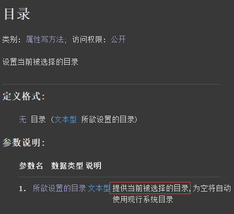
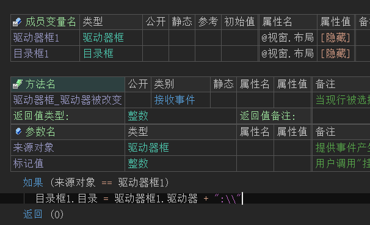
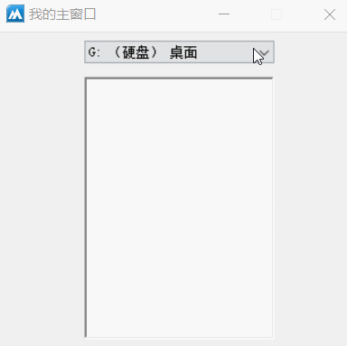
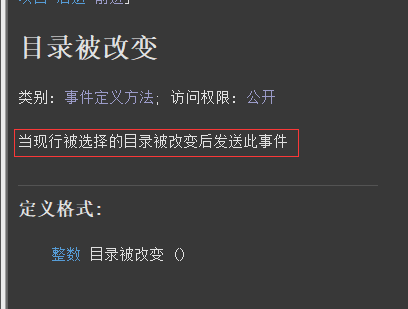
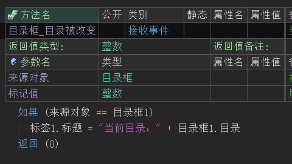
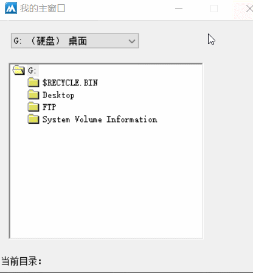

作者：创世魂
● 概述
本组件主要用于显示指定磁盘目录内容列表，本组件可结合“驱动器框”一起使用。
● 目录(写)
帮助文档如下图：
通过本属性可设置当前要显示的目录。

代码编写如下图：
添加驱动器的“驱动器被改变”事件，并在事件下设置本属性值为“驱动器”。

运行效果如下图：
最终选择驱动器后，目录框会显示当前驱动器的目录内容，并且同时还支持双击打开子目录。

● 目录被改变(事件)
帮助文档如下图：
当目录框内容被切换后会触发本事件。

代码编写如下图：
添加“目录被改变”事件，并取出当前目录赋值给标签显示。

运行效果如下图：
最终可看到目录双击切换时，标签也会实时显示当前目录。
